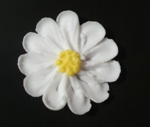

← Volver al módulo 5

Flor Margarita
Flor decorativa elaborada con pétalos blancos y centro amarillo utilizando técnicas de boquillas y clavo.
Ingredientes
- 1 clara de huevo
- 2 tazas de azúcar impalpable
- 1 cucharada de jugo de limón
- Boquilla Nº 104 o 103
- Boquilla Nº 133
- Mangas
- Acople
- Clavo
- Colorante amarillo
Preparación
Realizar mise en place y preparar el glasé real con clara de huevo, azúcar impalpable y jugo de limón.
Dividir el glasé en dos porciones y teñir una con colorante amarillo.
Cargar una manga con glasé blanco, acople y boquilla Nº 104 o 103.
Cargar otra manga con el glasé amarillo y la boquilla Nº 133.
Cubrir el clavo con papel aluminio y preparar la superficie para trabajar.
Hacer un pequeño punto al centro como guía, sostener la manga a 90° y formar de 10 a 12 pétalos alrededor.
Con el glasé amarillo, formar el centro de la margarita.
Dejar secar completamente antes de retirar el papel aluminio.